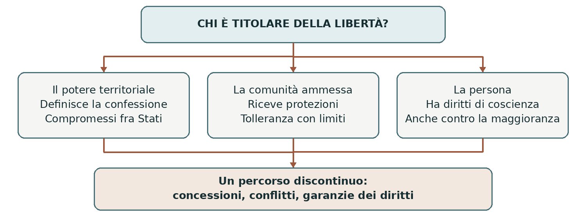

EUROPA E DIRITTI • DAL CINQUECENTO ALL’ETÀ CONTEMPORANEA
La lenta libertà religiosa
La libertà religiosa non nacque in un solo momento. Per secoli il potere politico cercò di garantire l’unità della fede; poi accettò forme limitate di pluralismo. Il passaggio dalla religione scelta dal governante al diritto della persona fu lungo, contrastato e segnato da arretramenti.
0. Domanda generatrice
Quando professare una religione smette di essere una concessione del potere e diventa un diritto della persona?
In sintesi La trasformazione decisiva riguarda il titolare della libertà: dal governante e dalle comunità riconosciute si passa all’individuo.
1. Il mondo precedente
Nell’Europa del primo Cinquecento religione e ordine politico erano strettamente intrecciati. Il sovrano doveva difendere la fede, mentre l’appartenenza religiosa contribuiva a definire la comunità. Il dissenso poteva apparire insieme errore spirituale e minaccia pubblica: non esisteva ancora il principio generale di uno Stato neutrale fra le confessioni.
La Riforma protestante rese permanente la divisione del cristianesimo occidentale. Cattolici, luterani e riformati costruirono istituzioni e identità distinte. Conflitti e persecuzioni mostrarono la difficoltà di ricomporre l’unità con la forza. Le prime soluzioni cercarono soprattutto la pace politica, senza riconoscere subito un uguale diritto a tutte le convinzioni.
In sintesi Il pluralismo religioso si impose come fatto storico prima di essere riconosciuto come diritto universale.
2. Le fratture
La pace di Augusta del 1555 regolò la convivenza fra cattolici e luterani nel Sacro Romano Impero. La
formula successiva cuius regio, eius religio riassume il principio della confessione territoriale: con
eccezioni e regole particolari, il governante determinava l’orientamento religioso del territorio. Chi non
voleva conformarsi poteva emigrare, affrontando però costi e separazioni.
Questo compromesso non includeva i calvinisti e non attribuiva a ogni abitante piena libertà di culto. Le paci di Vestfalia del 1648 estesero il riconoscimento ai riformati e rafforzarono determinate garanzie per minoranze e assetti confessionali, richiamando anche la situazione del 1624. Limitarono così il potere di modificare arbitrariamente gli equilibri religiosi.
In sintesi Augusta e Vestfalia ridussero alcuni conflitti, ma riconobbero diritti entro un sistema di confessioni e territori, non una libertà individuale illimitata.
3. Attori, gruppi e conflitti
L’espansione della libertà nacque da conflitti fra autorità, comunità e persone: nessun gruppo seguì un percorso uniforme.
| Attori | Obiettivi e interessi |
|---|---|
| Sovrani e governi | Cercavano ordine e lealtà; potevano imporre uniformità oppure accettare compromessi. |
| Chiese e confessioni | Difendevano dottrina, culto e organizzazione; spesso rivendicavano protezioni esclusive. |
| Minoranze religiose | Chiedevano sicurezza, possibilità di culto e accesso alla vita civile. |
| Filosofi e riformatori | Discussero i limiti della coercizione e il rapporto fra coscienza e autorità. |
| Cittadini e legislatori | Trasformarono alcune rivendicazioni in dichiarazioni e garanzie costituzionali. |
In sintesi Il pluralismo divenne più stabile quando la protezione delle persone iniziò a prevalere sulla sola concessione del governante.
4. Il processo storico
La tolleranza può essere revocata
In Francia l’editto di Nantes del 1598 garantì ai protestanti diritti e un culto limitato a determinate
condizioni e luoghi. La monarchia rimaneva cattolica: la tolleranza non equivaleva a una completa parità
religiosa. Nel 1685 Luigi XIV revocò l’editto; pressioni, conversioni forzate e fughe mostrarono quanto
fossero fragili le concessioni.
In Inghilterra il Toleration Act del 1689 consentì il culto a gruppi protestanti dissenzienti, entro precisi
requisiti. Non tutelò allo stesso modo cattolici e antitrinitari, né eliminò tutte le esclusioni dalle cariche
pubbliche. Una maggiore libertà di culto poteva convivere con disuguaglianze civili.
Dalla prudenza politica alla libertà di coscienza
Nella Lettera sulla tolleranza del 1689, John Locke distinse i compiti del potere civile dalla cura della
salvezza: la forza non produce una convinzione sincera. La sua proposta conservava però esclusioni, fra
cui quella degli atei. Leggerla storicamente significa riconoscerne insieme la novità e i limiti.
Nel Settecento la critica delle persecuzioni si allargò. Voltaire intervenne sul caso Calas e contro il fanatismo; altri riformatori sostennero la tolleranza per ragioni civili ed economiche. La patente di Giuseppe II del 1781 ampliò possibilità di culto e diritti per alcune minoranze, mantenendo una posizione privilegiata al cattolicesimo.
Le dichiarazioni dei diritti e le garanzie contemporanee
La dichiarazione francese del 1789, all’articolo 10, tutelò le opinioni anche religiose entro il limite
dell’ordine pubblico stabilito dalla legge. Negli Stati Uniti il Primo emendamento del 1791 vietò al
Congresso di istituire una religione e di impedirne il libero esercizio: inizialmente il vincolo riguardava il
potere federale, non cancellava tutte le restrizioni degli Stati.
Nel 1948 la Costituzione italiana riconobbe la libertà delle confessioni e il diritto di tutti a professare e propagandare la propria fede, esercitando il culto individualmente o in associazione. Nello stesso anno la Dichiarazione universale dei diritti umani affermò la libertà di pensiero, coscienza e religione, compresa la possibilità di cambiare credo.
In sintesi Tolleranza, uguaglianza civile e libertà di coscienza sono conquiste collegate, ma distinte e non simultanee.
Lo snodo decisivo
Il mutamento decisivo avviene quando la protezione della coscienza non dipende dall’approvazione della fede professata. Nel quadro contemporaneo essa comprende anche la scelta di non aderire a una religione.
5. Le fonti in dialogo
Dal principio territoriale all’articolo 19
Confrontiamo il compromesso confessionale di Augusta con una fonte normativa contemporanea: l’articolo 19 della Costituzione italiana, in vigore dal 1948.
Contenuto — sintesi didattica: Augusta organizzava soprattutto i rapporti fra poteri territoriali e confessioni ammesse. L’articolo 19 riconosce invece a tutti il diritto di professare liberamente la propria fede, farne propaganda ed esercitare il culto, privatamente o pubblicamente, purché i riti non siano contrari al buon costume.
Interpretazione e limiti: La Costituzione enuncia un diritto, non descrive automaticamente ogni pratica sociale. Per valutare la libertà effettiva bisogna studiare anche leggi, decisioni giudiziarie e discriminazioni. Non va proiettata la nozione contemporanea di diritto individuale sul testo del 1555.
Domanda di lettura: Chi è il titolare della libertà nei due casi? Perché la parola “tutti” è più ampia di “cittadini”?
Fonte: Senato della Repubblica, Costituzione, articolo 19
In sintesi Confrontare le norme permette di riconoscere un cambiamento nel fondamento e nell’estensione del diritto.
6. Conseguenze e nuovo assetto
Il riconoscimento della libertà religiosa contribuì a separare l’appartenenza politica dall’uniformità di fede. Un individuo poteva aspirare alla piena partecipazione civile senza condividere la religione della maggioranza. Le forme di questo rapporto variarono da un paese all’altro.
Il percorso non fu inevitabile e non è concluso. La laicità delle istituzioni non coincide con l’ostilità verso le religioni: riguarda la tutela della libertà e del pluralismo. Un diritto proclamato richiede protezioni effettive anche per minoranze, persone che cambiano credo e persone non credenti.
In sintesi La libertà religiosa diventa più ampia quando si collega all’uguaglianza e alla libertà di coscienza.
7. Conclusione
Dal cuius regio ai diritti contemporanei cambia la domanda politica: non soltanto quale religione debba
avere un territorio, ma come proteggere la coscienza di ciascuno. Concessioni, rivoluzioni e costituzioni
contribuirono a questa trasformazione, fra progressi e ritorni alla persecuzione.
Sintesi finale Augusta riconobbe un compromesso fra confessioni e poteri territoriali. Vestfalia ampliò il sistema delle garanzie senza creare piena libertà per tutti. La tolleranza poteva essere limitata e revocata. Le dichiarazioni dei diritti spostarono l’attenzione verso la persona. La libertà di coscienza comprende credere, cambiare credo e non credere.
Per studiare e collegare
Coordinate essenziali
Spazio: Europa, con un confronto con gli Stati Uniti. Tempi: 1555–1948. Problema centrale: distinguere pace confessionale, tolleranza e libertà individuale.
Saperi irrinunciabili
1. Nel Cinquecento unità politica e unità religiosa erano strettamente legate.
2. Augusta, 1555: riconoscimento di cattolici e luterani nell’Impero.
3. Cuius regio riassume la confessione territoriale, con regole ed eccezioni.
4. Vestfalia, 1648: riconoscimento dei riformati e ulteriori garanzie confessionali.
5. Nantes, 1598: tolleranza limitata; revoca nel 1685.
6. Il Toleration Act del 1689 lasciò esclusioni e disuguaglianze.
7. Locke difese la tolleranza senza estenderla pienamente a tutti.
8. Le dichiarazioni di fine Settecento affermarono diritti della persona.
9. Nel 1948 Costituzione italiana e Dichiarazione universale ampliarono le garanzie.
10. La proclamazione di un diritto non ne assicura da sola l’effettivo rispetto.
Mappa concettuale

I tre modelli aiutano a distinguere logiche diverse: non sono tappe identiche e obbligatorie per ogni paese.
Strumenti e attività
Linea del tempo ragionata
| Quando | Che cosa cambia |
|---|---|
| 1555 | Pace di Augusta: cattolici e luterani nell’Impero. |
| 1598 | Editto di Nantes: diritti e culto limitato per i protestanti francesi. |
| 1648 | Vestfalia: ampliamento del riconoscimento confessionale. |
| 1685–1689 | Revoca di Nantes; Toleration Act inglese e Lettera di Locke. |
| 1789–1791 | Dichiarazione francese e Primo emendamento statunitense. |
| 1948 | Costituzione italiana e Dichiarazione universale dei diritti umani. |
Vocabolario essenziale
Tolleranza. Accettazione del dissenso, spesso sottoposta a limiti e condizioni.
Libertà di coscienza. Diritto a formare, mantenere o cambiare le proprie convinzioni.
Confessione. Comunità religiosa definita da dottrina e appartenenza.
Laicità. Principio di tutela del pluralismo e della libertà rispetto al potere pubblico.
Attività di comprensione
1. Confronta Augusta, Nantes e l’articolo 19: chi è protetto e con quali limiti?
2. Spiega perché la revoca di Nantes smentisce l’idea di un progresso continuo.
3. Argomenta in dieci righe la differenza fra “ti permetto di credere” e “hai diritto di credere”.
Fonti e approfondimenti
Approfondimento di storia per la classe terza. Fonti e studi per verificare e ampliare la lettura.
Senato della Repubblica • Costituzione, articolo 19
OHCHR • Dichiarazione universale, articolo 18
Treccani, Dizionario di Storia • Pace di Augusta